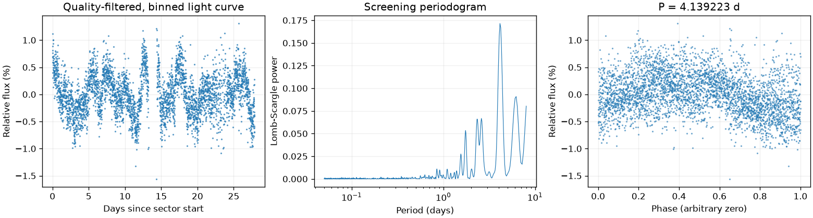
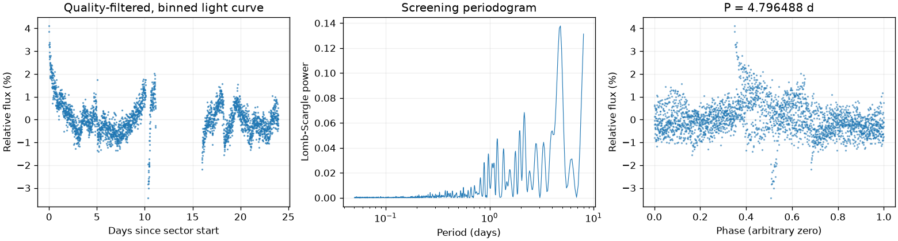
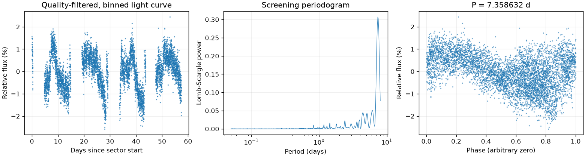

Sector 1 · LS 4.139223 天
BLS 辅助周期：7.871074 天
两种搜索周期不同，尚未自动决定采用哪一个。
前半段 LS：7.437449 天；后半段 LS：4.078154 天。
相对幅度估计 0.5038% · 有效点数 18278

Screening peak only; no correlated-noise false-alarm calibration or physical classification.
这是筛选报告，未确认新发现，也不能代替 VSX 提交材料。
图中依次为亮度随时间变化、候选周期强度和折叠后的重复形状。相位零点仅供展示；纵轴是相对通量，不是标定星等。
BLS 辅助周期：7.871074 天
两种搜索周期不同，尚未自动决定采用哪一个。
前半段 LS：7.437449 天；后半段 LS：4.078154 天。
相对幅度估计 0.5038% · 有效点数 18278

Screening peak only; no correlated-noise false-alarm calibration or physical classification.
BLS 辅助周期：5.297169 天
两种搜索周期不同，尚未自动决定采用哪一个。
前半段 LS：4.653462 天；后半段 LS：2.126802 天。
相对幅度估计 1.2649% · 有效点数 13544

Screening peak only; no correlated-noise false-alarm calibration or physical classification.
BLS 辅助周期：7.271700 天
两种搜索周期不同，尚未自动决定采用哪一个。
前半段 LS：7.478504 天；后半段 LS：7.478468 天。
相对幅度估计 1.2612% · 有效点数 27868

Screening peak only; no correlated-noise false-alarm calibration or physical classification.
{
"ra_deg": 74.0857194527217,
"dec_deg": -66.4538830696401,
"catalog_queries": [
{
"source": "VSX",
"checked_at": "2026-11-10T08:50:55.225777+00:00",
"url": "https://vsx.aavso.org/index.php",
"query": {
"params": {
"view": "api.list",
"ra": 74.0857194527217,
"dec": -66.4538830696401,
"radius": 0.04,
"format": "json"
}
},
"status": "completed",
"match_count": 24,
"note": "VSX neighborhood only; no-match is not novelty confirmation."
},
{
"source": "SIMBAD/VizieR/ADS",
"status": "not_run",
"note": "Requires detailed catalog/literature review; VSX alone is insufficient."
}
],
"vsx_neighbors": [
{
"Name": "Gaia DR3 4662154087513210112",
"RA2000": "73.99402",
"Declination2000": "-66.46019",
"ProperMotionRA": "1.8990",
"ProperMotionDec": "-0.2870",
"VariabilityType": "L",
"MaxMag": "15.17 G",
"MinMag": "15.41 G",
"SpectralType": "M",
"Discoverer": "Gaia collaboration",
"Category": "Variable",
"OID": "3066886",
"Constellation": "Dor",
"sep_arcsec": 133.80170067926326
},
{
"Name": "Gaia DR3 4662154087514975360",
"RA2000": "74.02437",
"Declination2000": "-66.47154",
"ProperMotionRA": "2.1550",
"ProperMotionDec": "0.2260",
"VariabilityType": "E",
"Period": "1.18061",
"EclipseDuration": "9.0",
"MaxMag": "16.47 G",
"MinMag": "16.59 G",
"SpectralType": "B",
"Discoverer": "Gaia collaboration",
"Category": "Variable",
"OID": "3067292",
"Constellation": "Dor",
"sep_arcsec": 108.7176020812731
},
{
"Name": "Gaia DR3 4662154499830072320",
"RA2000": "74.03066",
"Declination2000": "-66.45182",
"ProperMotionRA": "1.7900",
"ProperMotionDec": "-0.0910",
"VariabilityType": "E",
"Period": "1.91314",
"EclipseDuration": "16.0",
"MaxMag": "16.13 G",
"MinMag": "16.46 G",
"SpectralType": "B",
"Discoverer": "Gaia collaboration",
"Category": "Variable",
"OID": "3067405",
"Constellation": "Dor",
"sep_arcsec": 79.53474442862256
},
{
"Name": "Gaia DR3 4662154053116376960",
"RA2000": "74.05400",
"Declination2000": "-66.46780",
"ProperMotionRA": "1.8790",
"ProperMotionDec": "-0.2760",
"VariabilityType": "E",
"Period": "11.5797",
"EclipseDuration": "3.0",
"MaxMag": "18.50 G",
"MinMag": "18.75 G",
"Discoverer": "Gaia collaboration",
"Category": "Variable",
"OID": "3067719",
"Constellation": "Dor",
"sep_arcsec": 67.74877147823638
},
{
"Name": "Gaia DR3 4662154014463287808",
"RA2000": "74.06024",
"Declination2000": "-66.48617",
"ProperMotionRA": "1.6600",
"ProperMotionDec": "-0.0180",
"VariabilityType": "E",
"Period": "10.6359",
"EclipseDuration": "17.0",
"MaxMag": "17.68 G",
"MinMag": "18.05 G",
"Discoverer": "Gaia collaboration",
"Category": "Variable",
"OID": "3067813",
"Constellation": "Dor",
"sep_arcsec": 121.86508138872614
},
{
"Name": "Gaia DR3 4662154431112395264",
"RA2000": "74.06425",
"Declination2000": "-66.45973",
"ProperMotionRA": "1.7180",
"ProperMotionDec": "-0.0650",
"VariabilityType": "VAR",
"Period": "0.0310266",
"MaxMag": "13.31 G",
"MinMag": "13.38 G",
"SpectralType": "B",
"Discoverer": "Gaia collaboration",
"Category": "Variable",
"OID": "3067864",
"Constellation": "Dor",
"sep_arcsec": 37.3655602405528
},
{
"Name": "Gaia DR3 4662154431073906688",
"RA2000": "74.06478",
"Declination2000": "-66.45591",
"ProperMotionRA": "1.7930",
"ProperMotionDec": "-0.1610",
"VariabilityType": "VAR",
"Period": "0.0617767",
"MaxMag": "13.87 G",
"MinMag": "13.94 G",
"SpectralType": "B",
"Discoverer": "Gaia collaboration",
"Category": "Variable",
"OID": "3067876",
"Constellation": "Dor",
"sep_arcsec": 30.984409966257125
},
{
"Name": "Gaia DR3 4662154431110602368",
"RA2000": "74.07248",
"Declination2000": "-66.45829",
"ProperMotionRA": "1.7930",
"ProperMotionDec": "-0.0070",
"VariabilityType": "L",
"MaxMag": "11.80 G",
"MinMag": "12.06 G",
"SpectralType": "M",
"Discoverer": "Gaia collaboration",
"Category": "Variable",
"OID": "3067983",
"Constellation": "Dor",
"sep_arcsec": 24.782415498935077
},
{
"Name": "Gaia DR3 4662154465470341504",
"RA2000": "74.08377",
"Declination2000": "-66.45375",
"ProperMotionRA": "1.0650",
"ProperMotionDec": "-0.3300",
"VariabilityType": "E",
"Period": "0.499785",
"MaxMag": "17.78 G",
"MinMag": "18.05 G",
"Discoverer": "Gaia collaboration",
"Category": "Variable",
"OID": "3068153",
"Constellation": "Dor",
"sep_arcsec": 2.8442525884618357
},
{
"Name": "Gaia DR3 4662154568513190016",
"RA2000": "74.08653",
"Declination2000": "-66.43333",
"ProperMotionRA": "2.1820",
"ProperMotionDec": "-0.2570",
"VariabilityType": "E",
"Period": "0.89838",
"EclipseDuration": "15.0",
"MaxMag": "19.52 G",
"MinMag": "19.95 G",
"Discoverer": "Gaia collaboration",
"Category": "Variable",
"OID": "8726223",
"Constellation": "Dor",
"sep_arcsec": 74.00024012961205
},
{
"Name": "Gaia DR3 4662154224952078464",
"RA2000": "74.09296",
"Declination2000": "-66.46808",
"ProperMotionRA": "1.7510",
"ProperMotionDec": "-0.1640",
"VariabilityType": "VAR",
"Period": "0.0249635",
"MaxMag": "13.65 G",
"MinMag": "13.72 G",
"SpectralType": "B",
"Discoverer": "Gaia collaboration",
"Category": "Variable",
"OID": "3068285",
"Constellation": "Dor",
"sep_arcsec": 52.158354923188
},
{
"Name": "Gaia DR3 4662154224952079104",
"RA2000": "74.09608",
"Declination2000": "-66.46834",
"ProperMotionRA": "1.6440",
"ProperMotionDec": "0.0180",
"VariabilityType": "E",
"Period": "1.22568",
"EclipseDuration": "15.0",
"MaxMag": "16.98 G",
"MinMag": "17.18 G",
"SpectralType": "B",
"Discoverer": "Gaia collaboration",
"Category": "Variable",
"OID": "3068336",
"Constellation": "Dor",
"sep_arcsec": 54.13464593285175
},
{
"Name": "LMC V0308",
"RA2000": "74.09677",
"Declination2000": "-66.45336",
"VariabilityType": "LC:",
"MaxMag": "11.0 R",
"MinMag": "11.5 R",
"SpectralType": "M0:",
"Category": "Variable",
"OID": "2219158",
"Constellation": "Dor",
"sep_arcsec": 16.003718451106028
},
{
"Name": "Gaia DR3 4662154224952079360",
"RA2000": "74.09776",
"Declination2000": "-66.46885",
"ProperMotionRA": "1.6870",
"ProperMotionDec": "-0.0650",
"VariabilityType": "DSCT|GDOR|SXPHE",
"Period": "0.0762466",
"MaxMag": "17.63 G",
"MinMag": "17.69 G",
"Discoverer": "Gaia collaboration",
"Category": "Variable",
"OID": "3068355",
"Constellation": "Dor",
"sep_arcsec": 56.59351696312036
},
{
"Name": "Gaia DR3 4662154362391128832",
"RA2000": "74.10602",
"Declination2000": "-66.44259",
"ProperMotionRA": "1.8110",
"ProperMotionDec": "-0.1680",
"VariabilityType": "DSCT|GDOR|SXPHE",
"Period": "0.1978527",
"MaxMag": "13.91 G",
"MinMag": "13.95 G",
"SpectralType": "B",
"Discoverer": "Gaia collaboration",
"Category": "Variable",
"OID": "3068480",
"Constellation": "Dor",
"sep_arcsec": 50.05581229789667
},
{
"Name": "Gaia DR3 4662153842664606848",
"RA2000": "74.10656",
"Declination2000": "-66.48021",
"ProperMotionRA": "1.5600",
"ProperMotionDec": "-0.1310",
"VariabilityType": "E",
"Period": "3.13646",
"EclipseDuration": "5.0",
"MaxMag": "17.68 G",
"MinMag": "17.88 G",
"Discoverer": "Gaia collaboration",
"Category": "Variable",
"OID": "3068486",
"Constellation": "Dor",
"sep_arcsec": 99.39837996128674
},
{
"Name": "Gaia DR3 4662154224952081664",
"RA2000": "74.11612",
"Declination2000": "-66.47225",
"ProperMotionRA": "1.8090",
"ProperMotionDec": "-0.2470",
"VariabilityType": "DSCT|GDOR|SXPHE",
"Period": "0.0435422",
"MaxMag": "15.80 G",
"MinMag": "15.85 G",
"SpectralType": "B",
"Discoverer": "Gaia collaboration",
"Category": "Variable",
"OID": "3068615",
"Constellation": "Dor",
"sep_arcsec": 79.25950504859478
},
{
"Name": "Gaia DR3 4662154396750927488",
"RA2000": "74.11714",
"Declination2000": "-66.43066",
"ProperMotionRA": "1.9600",
"ProperMotionDec": "-0.0510",
"VariabilityType": "L",
"MaxMag": "15.41 G",
"MinMag": "16.01 G",
"SpectralType": "M",
"Discoverer": "Gaia collaboration",
"Category": "Variable",
"OID": "3068629",
"Constellation": "Dor",
"sep_arcsec": 95.0435981890956
},
{
"Name": "Gaia DR3 4662153778240121984",
"RA2000": "74.11858",
"Declination2000": "-66.48271",
"ProperMotionRA": "-1.9790",
"ProperMotionDec": "2.2720",
"VariabilityType": "DSCT|GDOR|SXPHE",
"MaxMag": "20.17 G",
"MinMag": "20.60 G",
"Discoverer": "Gaia collaboration",
"Category": "Variable",
"OID": "10636878",
"Constellation": "Dor",
"sep_arcsec": 114.01948589825722
},
{
"Name": "LMC V0321",
"AUID": "000-BCZ-122",
"RA2000": "74.14446",
"Declination2000": "-66.47397",
"VariabilityType": "WR:",
"MaxMag": "12.61 V",
"MinMag": "?",
"SpectralType": "WC4(+O9.5II:)",
"Category": "Suspected",
"OID": "2219163",
"Constellation": "Dor",
"sep_arcsec": 111.17526544699741
},
{
"Name": "Gaia DR3 4662154190592365824",
"RA2000": "74.15407",
"Declination2000": "-66.47720",
"ProperMotionRA": "1.7880",
"ProperMotionDec": "-0.3910",
"VariabilityType": "E",
"Period": "2.935",
"EclipseDuration": "12.0",
"MaxMag": "16.53 G",
"MinMag": "16.66 G",
"SpectralType": "B",
"Discoverer": "Gaia collaboration",
"Category": "Variable",
"OID": "3069154",
"Constellation": "Dor",
"sep_arcsec": 129.22719488036088
},
{
"Name": "Gaia DR3 4662154190592366080",
"RA2000": "74.15479",
"Declination2000": "-66.47478",
"ProperMotionRA": "2.1880",
"ProperMotionDec": "0.5720",
"VariabilityType": "DSCT|GDOR|SXPHE",
"Period": "0.0421076",
"MaxMag": "18.09 G",
"MinMag": "18.24 G",
"Discoverer": "Gaia collaboration",
"Category": "Variable",
"OID": "3069165",
"Constellation": "Dor",
"sep_arcsec": 124.57282134041105
},
{
"Name": "Gaia DR3 4662151235654869888",
"RA2000": "74.16901",
"Declination2000": "-66.47386",
"ProperMotionRA": "1.4960",
"ProperMotionDec": "0.1890",
"VariabilityType": "DSCT|GDOR|SXPHE",
"Period": "0.0420669",
"MaxMag": "16.90 G",
"MinMag": "16.99 G",
"SpectralType": "B",
"Discoverer": "Gaia collaboration",
"Category": "Variable",
"OID": "3069346",
"Constellation": "Dor",
"sep_arcsec": 139.67430866987914
},
{
"Name": "Gaia DR3 4662155805463815552",
"RA2000": "74.17242",
"Declination2000": "-66.43456",
"ProperMotionRA": "1.8820",
"ProperMotionDec": "1.5060",
"VariabilityType": "DSCT|GDOR|SXPHE",
"Period": "0.0420382",
"MaxMag": "17.77 G",
"MinMag": "17.94 G",
"Discoverer": "Gaia collaboration",
"Category": "Variable",
"OID": "3069404",
"Constellation": "Dor",
"sep_arcsec": 142.82267808193225
}
],
"notes": [],
"errors": [],
"repeatability": {
"status": "inconsistent",
"fractional_spread": 0.6712013775061076,
"tolerance": 0.05,
"note": "Heuristic screening comparison, not period-error or long-term phase-coherence validation."
},
"localization": null,
"submission": {
"name": null,
"ra_deg": null,
"dec_deg": null,
"coordinate_source": null,
"coordinate_epoch": null,
"variability_type": null,
"period_days": null,
"period_error_days": null,
"epoch": null,
"epoch_time_standard": null,
"epoch_event": null,
"max_magnitude": null,
"min_magnitude": null,
"passband": null,
"magnitude_source": null,
"mean_magnitude": null,
"amplitude_magnitude": null,
"amplitude_passband": null,
"discoverers": null,
"references": null
}
}